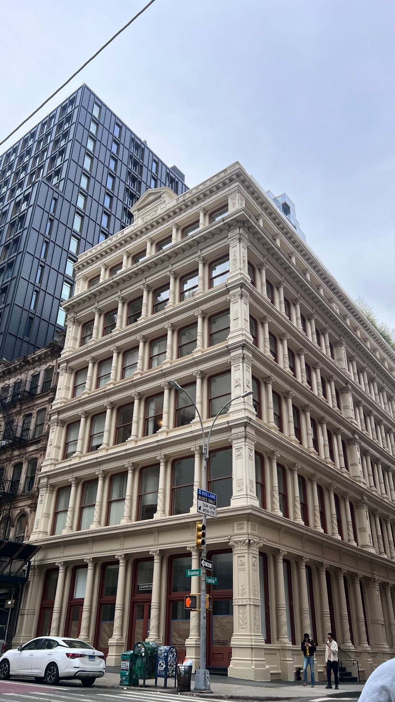
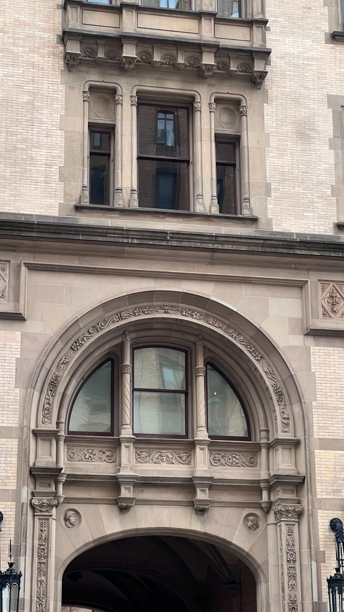
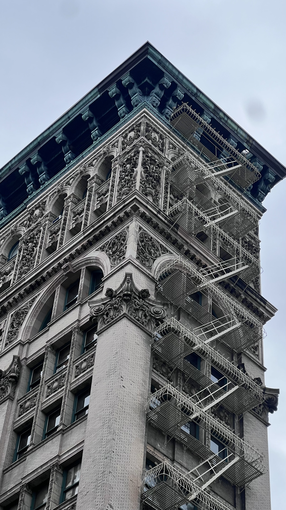

New York City · Texture · Structure · Atmosphere
Exploring architecture, rhythm, texture, and urban observation through photography and design.



My process begins with observation: walking through the city, identifying rhythm, texture, structure, and atmosphere within architecture and urban spaces.
I document repetition, shadow, geometry, and architectural details throughout New York City.
Through framing and negative space, I transform buildings into structured visual compositions.
My background in graphic design and computer science influences the way I approach hierarchy, systems, and visual storytelling.
I’m Prachi Patel, a New York-based designer and photographer exploring the relationship between architecture, visual systems, and digital experience. My background in computer science, graphic design, and photography informs my interest in interaction, structure, rhythm, and urban observation. Currently completing a B.A. in Computer Science with a minor in Graphic Design at Pace University in New York City.